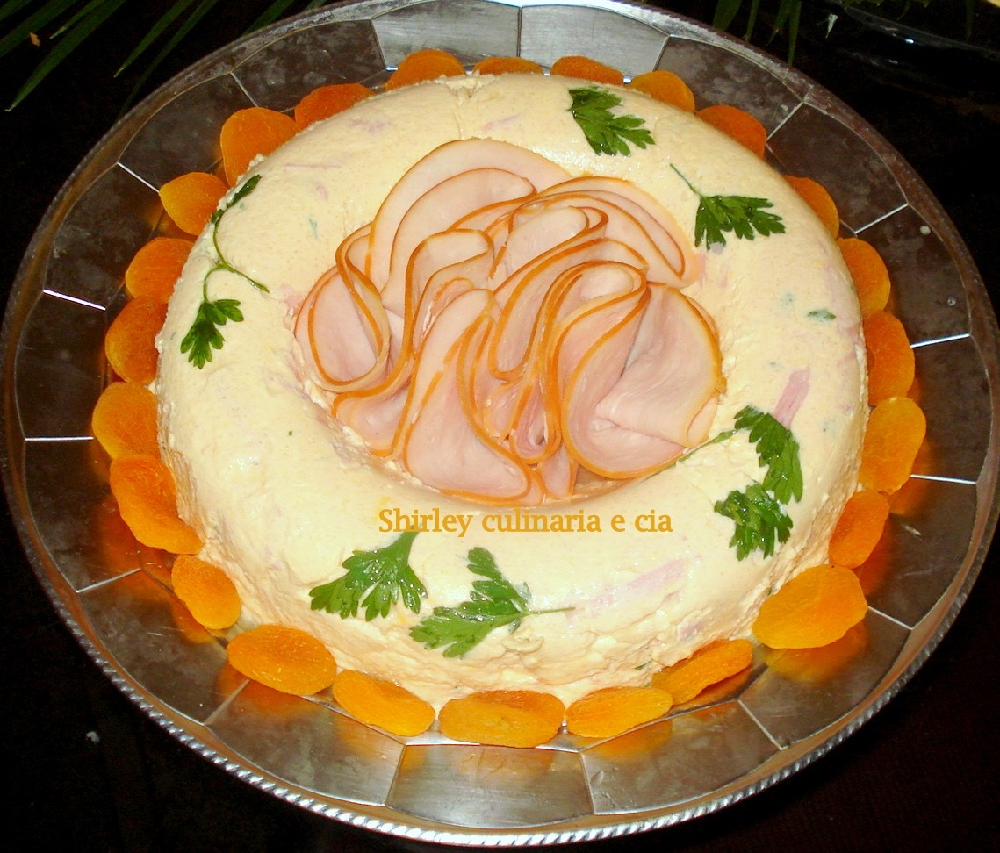

Salgados · Petiscos
Musse de presunto

Ingredientes
- 1 xícara de caldo de galinha
- 1 xícara de leite
- 1 envelope de gelatina branca em pó sem sabor
- 2 gemas
- 1/2 colher (chá) de sal
- 1 colher (chá) de mostarda
- algumas gotas de molho de pimenta
- 1 1/2 xícara de presunto moído
- 1/2 colher (chá) de cebola ralada
- 1 colher (chá) de vinagre
- algumas folhas de salsa picadas
- 1/4 xícara de maionese
- 1/3 xícara de creme de leite fresco batido
- óleo para untar
- folhas de agrião para decorar
Modo de preparo
- Numa panela, misture o caldo de galinha e o leite. Dissolva a gelatina conforme a embalagem e junte à mistura. Aqueça em fogo brando até dissolver bem, sem ferver.
- Bata as gemas levemente e tempere com o sal, a mostarda e o molho de pimenta. Junte um pouco do líquido quente às gemas, mexendo sempre; devolva tudo à panela e cozinhe em fogo brando até engrossar levemente. Deixe esfriar.
- Incorpore o presunto moído, a cebola, o vinagre, a salsa e a maionese. Por último, incorpore o creme de leite batido com cuidado.
- Despeje em fôrma untada (ou forminhas individuais) e leve à geladeira até firmar.
- Desenforme e decore com folhas de agrião.
Observação
Congelamento: congele a musse firme em aberto; desenforme, embrulhe em filme plástico e congele. Descongelamento: na geladeira; decore com agrião na hora de servir.